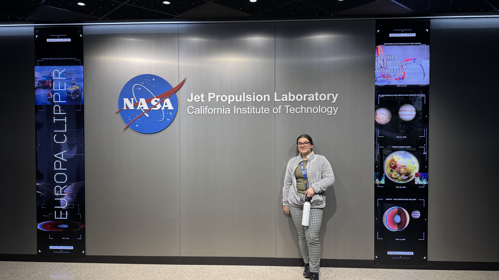

Projects and Research

- NASA – Jet Propulsion Laboratory Data Science Internship
- NSF funded research under Dr. Mojirsheibani – Implementing virtual re-sampling approaches in Big-data scenarios to develop Higher Criticism Statistics for multiple testing
- ARCS associate – AI Facilitator for ME101 course
- Modifying Dijkstra's Algorithm to graphs with more an one weight per edge
- Personal Portfolio Web Development
- Machine Learning Body Fat Percentage Predictor